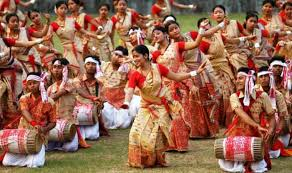
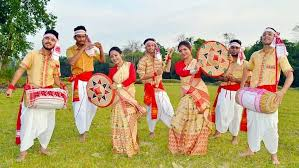
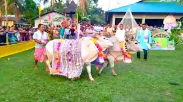
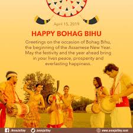
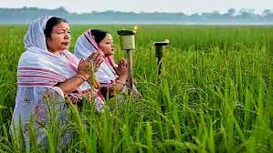
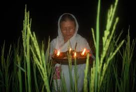
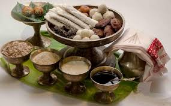
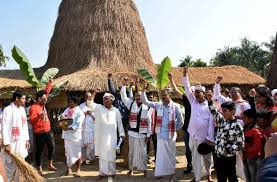

Introduction: Bihu is the state festival of Assam. It is a festival of joy. All the people of Assam unite together to celebrate this festival and even in abroad the Assamese people unite together to celebrate this festival with joy and happiness. In the day of bihu, people of Assam make different kinds of pithas, sometimes pray to God by lighting earthen-lamps in the paddy fields and planting tusli plant in their balconies or eating a big meal at night.
There are three kinds of Bihu: 1. Bohag or Rongali Bihu 2. Kati or Kongail Bihu 3. Magh or Bhogali Bihu.
 Rongali Bihu: This is the bihu of joy and happiness. In this bihu, people take their cows to the nearby rivers, lakes or ponds to wash them and then give them something to eat. People wear new clothes on the main day of this Bihu. People greets one another and make many kinds of pithas and share among them. Then they play the dhol and prform bihu dance. People enjoy this bihu very much and celebrate this with unity, joy and happiness.
 Kongali Bihu: This is the bihu of sorrow. In this bihu, people pray to the God for their welfare of their crops by lighting earthen-lanterns in their paddy fields and pray in front of the earthen-lamps. People also plant a new tulsi plant in their balonies and also pray in front of the plant. During the period of this Bihu, people face scarcity of food. So, overall in this bihu people have to struggle from harsh conditions such as scarcity of food and many other problems.
 Bhogali Bihu: This is the bihu is the harvest festival. In this bihu, people dance with joy and eat big meals. They also organize a dinner party before the day of the main bihu. In the dinner party, people play dhol, sing bihu songs, perform bihu dance, etc. People make majis and burn them and pray in front of them. People also offer hand-made pithas to the burning majis as an offering to their God. Then they have the special dish named "Jolpan". In Jolpan, curd, jaggery or sugar, "Sira", "Akhoi" and others are eaten. Overall, in this bihu, people have meals together with joy and happiness and pray to their gods and have the "Jolpan" as a special dish.
 Conclusion: People of Assam celebrate with great joy and happiness and love their culture. I also enjoy and like this Assamese cultural fesival very much and other Assamese people also love it very much and trying to save their culture from being extincted.